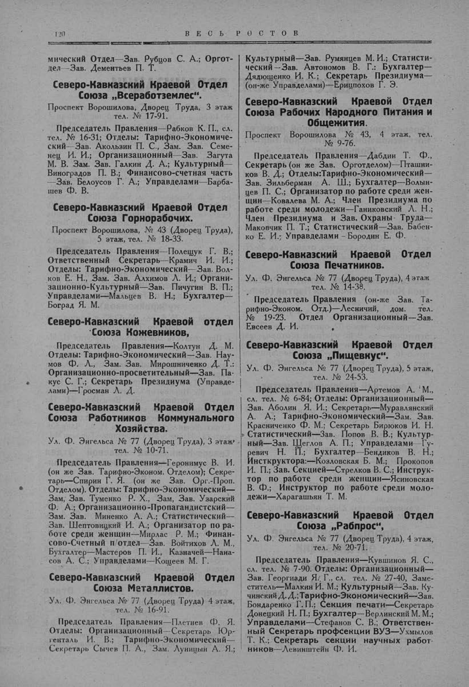

Лист источника 170
Скан

Распознанный текст
120 ВЕСЬ РОСТОВ
мический Отдел—Зав. Рубцов С. А.; Оргот-
дел—Зав. Дементьев П. Т.
Северо-Кавказский Краевой Отдел
Союза „Всеработземлес“.
Проспект Ворошилова, Дворец Труда, 3 этаж
тел. № 17-91.
Председатель Правления—Рабков К. П., сл.
тел. № 16-31; Отделы: Тарифно-Экономиче-
ский—Зав. Акользин П. С., Зам. Зав. Семе-
нец И. И.; Организационный—Зав. Загута
М. В. Зам. Зав. Галкин Д. А.; Культурный—
Виноградов П. В.; Финансово-счетная часть
—Зав. Белоусов Г. А.; Управделами—Барба-
шев Ф. В.
Северо-Кавказский Краевой Отдел
Союза Горнорабочих.
Проспект Ворошилова, № 43 (Дворец Труда),
5 этаж, тел. № 18-33.
Председатель Правления—Полещук Г. В.;
Ответственный Секретарь—Крамич И. И.;
Отделы: Тарифно-Экономический—Зав. Вол-
ков Е. Н., Зам. Зав. Алхимов Л. И.; Органи-
зационно-Культурный—Зав. Пичугин В. П.;
Управделами—Мальцев В. Н.; Бухгалтер—
Боград Я. М.
Северо-Кавказский Краевой отдел
Союза Кожевников,
Председатель Правления—Колтун Д. М.
Отделы: Тарифно-Экономический—Зав. Нау-
мов Ф. Л., Зам. Зав. Мирошниченко Д. Т.:
Организационно-просветительный—Зав. Па-
кус С. Г.; Секретарь Президиума (Управде-
лами)—Гросман Л. Д.
Северо-Кавказский Краевой Отдел
Союза Работников Коммунального
Хозяйства.
Ул. Ф. Энгельса № 77 (Дворец Труда), 3 этаж
тел. № 10-71.
Председатель Правления—Геронимус В. И.
(он же Зав. Тарифно-Эконом. Отделом); Секре-
тарь—Спирин Г. Я. (он же Зав. Орг.-Проп.
Отделом). Отделы: Тарифно-Экономический—
Зам. Зав. Туменко Р. Х., Зам. Зав. Узарский
Ф. А.; Организационно-Пропагандистский—
Зам. Зав. Миненко А. А.; Статистический—
Зав. Шептовицкий И. А.; Организатор по ра-
боте среди женщин—Мирлас Р. М.; Финан-
сово-Счетный п/отдел—Зав. Войтихов Л. М.,
Бухгалтер—Мастеров П. И., Казначей—Нана-
сов А. С.; Управделами—Кощеев М. Г.
Северо-Кавказский Краевой Отдел
Союза Металлистов.
Ул. Ф. Энгельса № 77 (Дворец Труда) 4 этаж,
тел. № 16-91.
Председатель Правления—Плетнев Ф. Я.
Отделы: Организационный—Секретарь Юр-
генталь И. В.; Тарифно-Экономический—
Секретарь Сычев П. А., Зам. Луницын А. Я.;
Культурный—Зав. Румянцев М. И.; Статисти-
ческий—Зав. Автономов В. Г.; Бухгалтер—
Дядющенко И. К.; Секретарь Президиума—
(он-же Управделами)—Ерицпохов Г. Э.
Северо-Кавказский Краевой Отдел
Союза Рабочих Народного Питания и
Общежития.
Проспект Ворошилова № 43, 4 этаж, тел.
№ 9-76.
Председатель Правления—Дабдин Т. Ф.,
Секретарь (он же Зав. Орготделом)—Пташни-
ков В. Д.; Отделы:Тарифно-Экономический—
Зав. Зильберман А. Ш.; Бухгалтер—Волын-
цев П. С.; Организатор по работе среди жен-
щин—Ковалева М. А.; Член Президиума по
работе среди молодежи—Ганиковский Л. Н.;
Член Президиума и Зав. Охраны Труда—
Маковчик П. Т.; Статистический—Зав. Бабен-
ко Е. И.; Управделами—Бородин Е. Ф.
Северо-Кавказский Краевой Отдел
Союза Печатников.
Ул. Ф. Энгельса № 77 (Дворец Труда), 4 этаж
тел. № 14-38.
Председатель Правления (он-же Зав. Та-
рифно-Эконом. Отд.)—Лесничий, дом. тел.
№ 19-23. Отдел Организационный—Зав.
Евсеев Д. И.
Северо-Кавказский Краевой Отдел
Союза „Пищевкус“.
Ул. Ф. Энгельса № 77 (Дворец Труда), 5 этаж,
тел. № 24-53.
Председатель Правления—Артемов А. М.,
сл. тел. № 6-84; Отделы: Организационный—
Зав. Аболин Я. И.; Секретарь—Муравлянский
А. А.; Тарифно-Экономический—Зам. Зав.
Красниченко Ф. М.; Секретарь Бирюков И. Н.
Статистический—Зав. Попов В. В.; Культур-
ный—Зав. Щеглов А. П.; Управделами—Гу-
ревич Н. П.; Бухгалтер—Бендиков В. Н.;
Инструктора:—Козловская Б. М.; Прокопов
И. П.; Зав. Секцией—Стрелков В. С.; Инструк-
тор по работе среди женщин—Ясиновская
В. Ф.; Инструктор по работе среди моло-
дежи—Харагашьян Т. М.
Северо-Кавказский Краевой Отдел
Союза „Рабпрос“,
Ул. Ф. Энгельса № 77 (Дворец Труда), 4 этаж,
тел. № 20-71.
Председатель Правления—Кувшинов Я. С.,
сл. тел. № 7-90. Отделы: Организационный—
Зав. Георгиади Я. Г., сл. тел. № 27-40, Заме-
ститель—Малкин И. М.; Культурный—Зав. Ку-
чинский Д. Д.; Тарифно-Экономический—Зав.
Бондаренко Г. П.; Секция печати—Секретарь
Донецкий Н. П.; Бухгалтер—Верлинский М. М.;
Управделами—Стефанов С. В.; Ответствен-
ный Секретарь профсекции ВУЗ—Ухмылов
Т. К.; Секретарь секции научных работ-
ников—Левинштейн Ф. И.